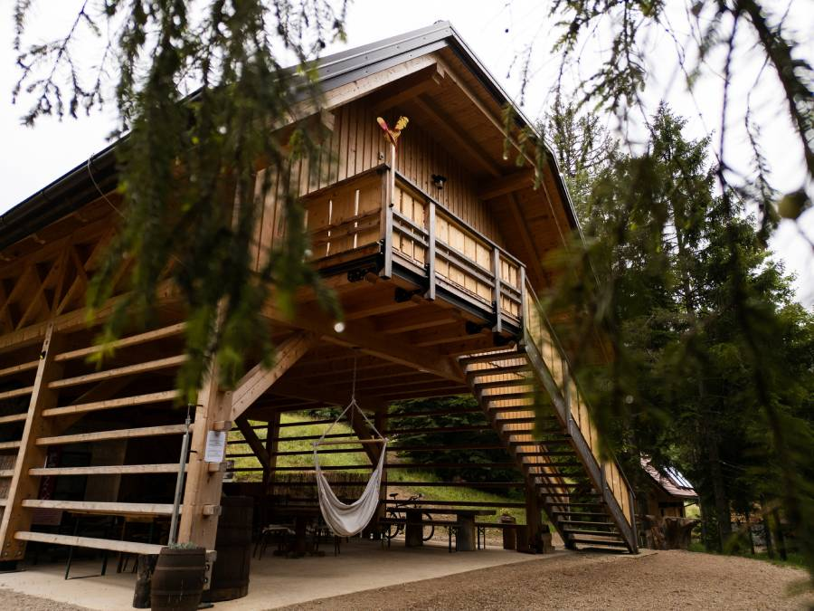
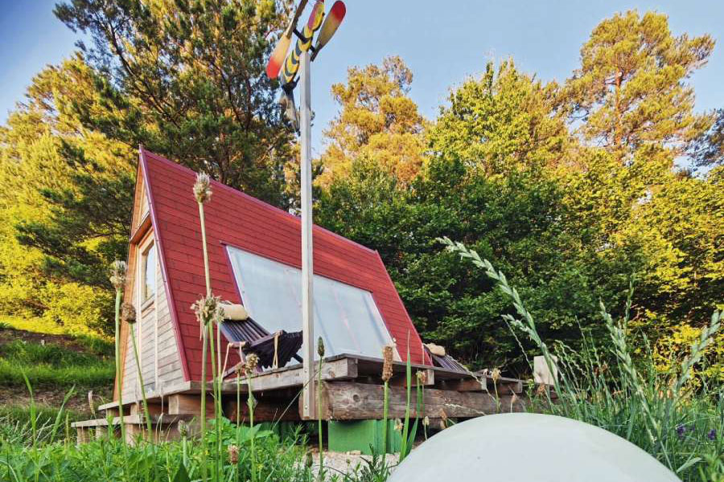
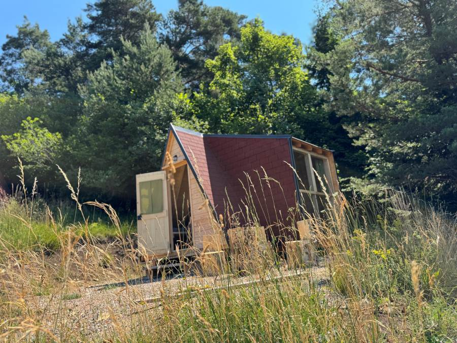
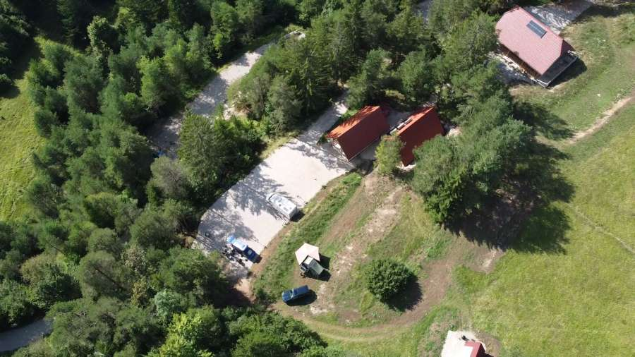
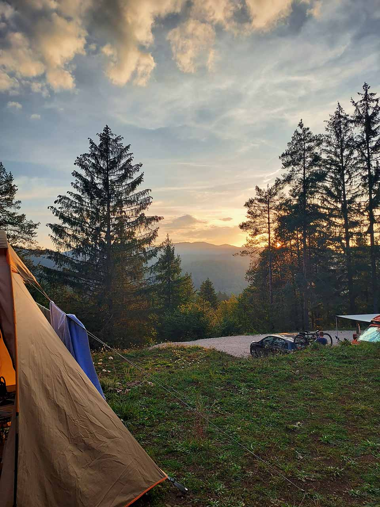
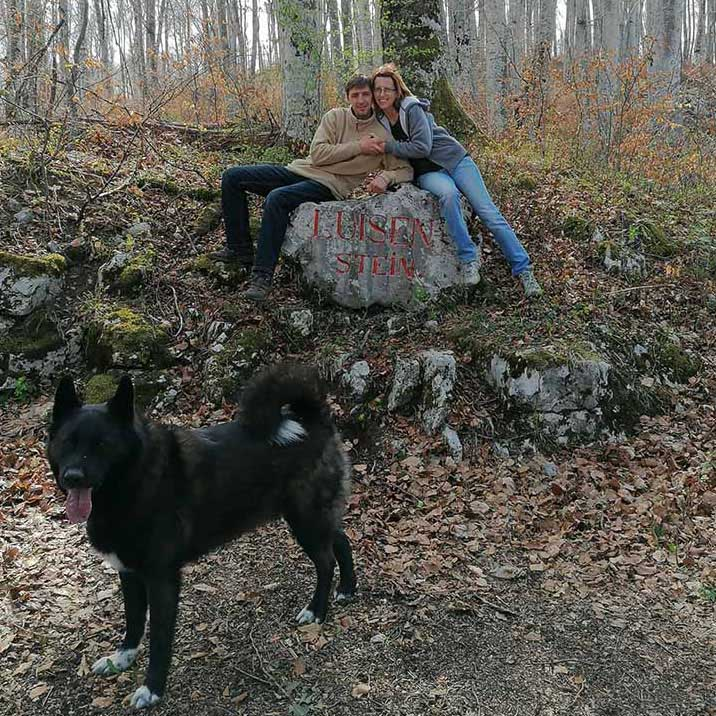

Vrh 23 · Stari trg pri Ložu · Loška dolina
Kamp Beli gaber
Tabla prenočišč
Prijava vsak dan 18:00–20:00
01 Kozolec 12oseb 4 kotički po 3, spanje na postelji ali senu Več

V mansardi kozolca spite na običajnih posteljah ali na senu. Prostor ni ogrevan, ima pa elektriko; posteljnina je vključena. Kopalnica je v sosednjem objektu, skupna kuhinja pa v pritličju.
02 Hiška Maja 2osebi Lesena hiška v obliki črke A Več

Del strehe se dvigne, da z ležišča gledate na gozd.
03 Hiška Urban 2+2odrasla + otroka Večja različica hiške Maja Več

Za dve odrasli osebi, dojenčka in manjšega otroka, vsak na svojem ležišču.
04 Drevesna hiška 2odrasla Hiška med vejami, 2 × 2,5 m Več

Majhna drevesna hiška, najbolj udobna za dva odrasla.
05 Lesen šotor 3 × 2osebi v šotoru Najvišja terasa, skupna terasa pred šotori Več

Sklop treh lesenih šotorov na najvišji terasi, z razgledom. Vsak šotor je zaseben, terasa je skupna.
06 Prostor za šotore 10+večjih šotorov 4 večje terase, brez dostopa z avtom Več

Štiri večje terase za udobno postavitev vsaj desetih večjih šotorov. Priključkov za elektriko in vodo ni.
07 Prostor za avtodome 4–5avtodomov Ob recepciji, brez priklopa na vodo in elektriko Več

Manjši prostor ob recepciji za štiri do pet avtodomov.
Za ceno in prost termin pokličite +386 64 191 634 ali pišite na info@kampbeligaber.com.
V juliju in avgustu je rezervacija zaželena.
V kampu
Je ✓
- Skupna kuhinja3 kuhalne plošče z dvema gorilnikoma, posoda, krožniki, pribor, kozarci in skodelice
- Hladilnik s pijačoPostrežete se sami
- Kava in čajZa pripravo v kuhinji
- Skupna terasa in parkiranjeZa vse goste kampa
- Izdelki lokalnih kmetijPo predhodnem dogovoru
Ni —
- Odprtega ognjaZaradi požarne ogroženosti
- Bara in trgovineTrgovina je v Igi vasi, 3 km stran
- Priključkov za elektriko in vodoNa terasah za šotore in prostoru za avtodome
- Stalno prisotnega osebjaBeno in Mateja sta v kampu vsak dan od 18:00 do 20:00, med vikendom skoraj ves dan

Elektriko daje sonce. Tudi vodo greje sonce.
Kamp stoji dovolj daleč od vasi, da se počutite sredi gozda, in živi od sončne energije.
V okolici
- Krožna pot po Loški doliniZačne se v kampu
- Križna jama10 km
- Snežnik1796 m
- Grad Snežnikgroficagreta.si
- Rakov ŠkocjanNotranjski park
- Cerkniško jezeroNotranjski park
- KolesarjenjeMakadamske ceste, tudi v Gorski kotar
03 · Posebnost kampa
Spanje na senu
Osrednja stavba kampa je kozolec. Spodaj skupna kuhinja, zgoraj mansarda, kjer lahko spite na običajnih posteljah ali na senu
.
- Kotički4
- Ležišča v kotičku3
- ElektrikaJe, od sonca
- OgrevanjeNi
- PosteljninaVključena
- KopalnicaSkupna, v sosednjem objektu

Gostitelja
Mateja in Beno z Vrha
Vrh je majhna vas Matejinega otroštva. Ko sta z Benom iskala dom, tudi za svoja konja, je prazen hlev na kmetiji njenih staršev postal njuna hiša.
Kamp sta odprla, da podeželje in mala vas ostaneta živa, in vabita goste, ki cenijo naravo in želijo spoznati ta košček Slovenije.
Kontakt
Naslov
Kamp Beli gaber
Vrh 23
1386 Stari trg pri Ložu
Odpri zemljevid →
Prijava in odjava
- Vsak dan18:00–20:00
- VikendSkoraj ves dan
- Julij, avgustRezervacija zaželena
Pot do kampa
- Ljubljana, KoperIzvoz Unec, čez Cerknico
- HrvaškaČabar, Prezid, Babno polje
Kamp upravlja Hišniška dejavnost, Beno Peček s.p.